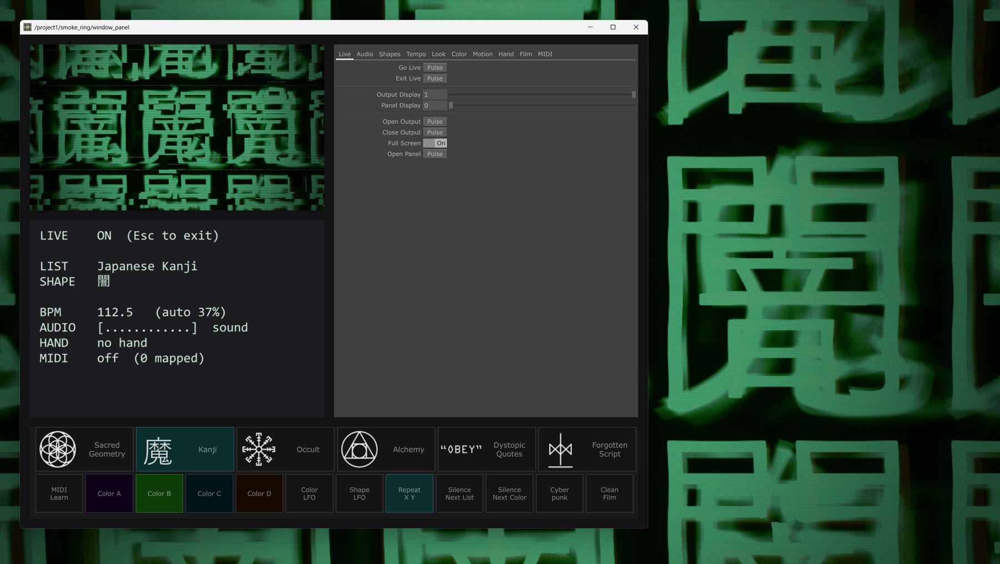

Symbolic Visual Interface
TouchDesigner & Leap Motion
Emanuele Musca — Evestrum_AV, concept, build & operation
A visual instrument for live performance, built around one idea: a symbol is a better unit of composition than a clip. Six libraries sit behind the panel — sacred geometry, Japanese kanji, occult sigils, alchemical signs, dystopic quotes and forgotten scripts — and the system draws from them in real time rather than playing back rendered video.
Everything an operator needs during a show is on a single page. Which library is live, which symbol is on screen, the tempo and how much of it is being taken from the audio, the hand-tracking state, the MIDI state. No hunting through a node network with an audience in the room.
Tempo is the spine. The system follows an auto-detected BPM from whatever is playing, and the symbol changes, repeats and colour moves ride on it. A Leap Motion sensor lets a performer reach into the field and take over — position and gesture drive shape, repetition and intensity directly. Where there is no hand, the LFOs keep it moving on their own, so the piece never stalls when nobody is standing in front of it.
Audio comes in over WASAPI loopback, so it listens to whatever the room is actually hearing — no patching, no interface, no separate send. The output goes full screen to a second display, with the panel staying on the operator's monitor.
Built in TouchDesigner and developed with Claude Code over the Embody MCP, which exposes the live network to an AI client and externalises it to version-controlled text — unusual for a TouchDesigner patch, and the reason this one could go through thirteen rebuilds without losing anything.
- LibrariesSacred geometry · kanji · occult · alchemy · dystopic quotes · forgotten script
- TempoAuto BPM detection with a manual override, driving shape and colour changes
- HandLeap Motion tracking for shape, repetition and intensity
- AudioWASAPI loopback — listens to the room's own output
- ColourFour palette slots, LFO-driven transitions, per-list silence rules
- LookFilm grain, cyberpunk and clean passes, repeat on X and Y
- ControlMIDI learn on every parameter, operator panel separate from the full-screen output
